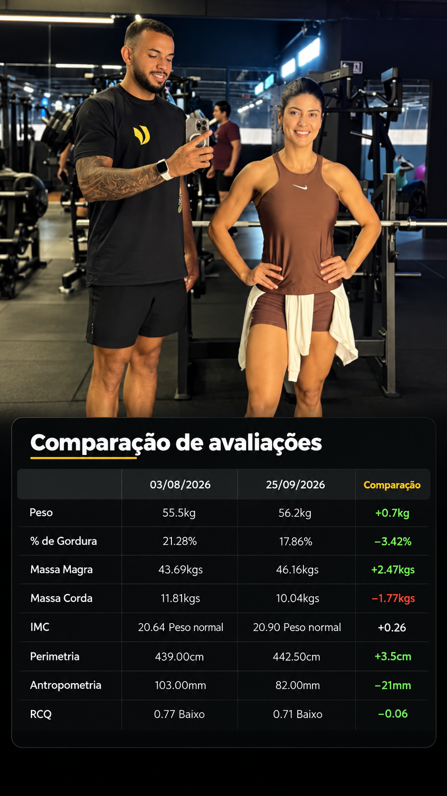
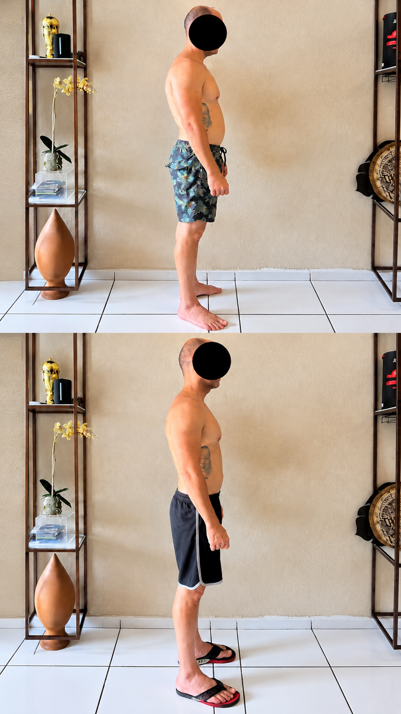

Pequenos Grupos
Treinamentos realizados em grupo, com orientação profissional, incentivo e acompanhamento durante os exercícios.
Personal Trainer
Conheça as modalidades de atendimento oferecidas por Jadilson Silva.
Treinamentos realizados em grupo, com orientação profissional, incentivo e acompanhamento durante os exercícios.
Treinamentos adaptados às necessidades individuais dos alunos, com acompanhamento profissional e atenção à segurança durante os exercícios.

Evolução alcançada em apenas 52 dias de treinamento, com dedicação, disciplina e acompanhamento personalizado. Um resultado que demonstra a importância de um planejamento adequado aos objetivos de cada aluno.

Mudança no corpo e na postura, com acompanhamento profissional e treinos adaptados às necessidades individuais.